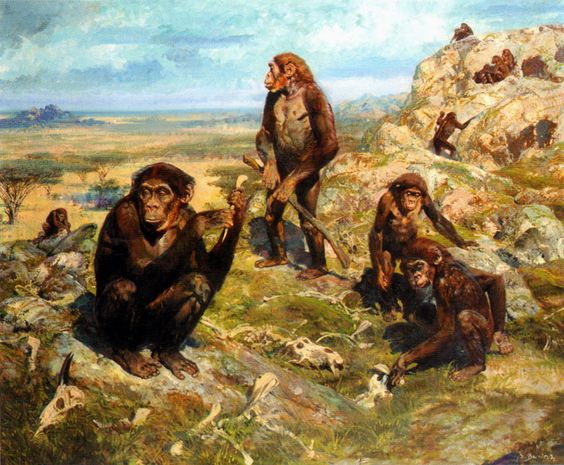

Cos'è NerdBook?
NerdBook è il Social Network più rivoluzionario degli ultimi 777 anni.
Se il tuo sogno è sempre stato quello di essere George W. Bush preparati ad essere sorpreso!

NerdBook ti permette di impersonare virtualmente l'ex-ex presidente degli USA.
Come ci si iscrive a NerdBook?
Bella domanda! Sai qual è la risposta?
Dipende.
Dipende da quanti soldi hai e da quanto tu sia pratico di bonifici bancari e di evasione fiscale tramite presunte donazioni tra "amici".
Chi siamo noi?
E' un quesito ancora non del tutto chiarito.
Tecnicamente ci possiamo definire l'unica specie vivente appartenente alla famiglia degli ominidi e all'ordine dei primati.
C'è chi invece ha una visione più spirituale o antropocentrica della vita umana. Se ti interessa l'argomento cerca "Filosofia" su Google ( senza virgolette ), oppure premi qua
Perché il nome Nerdbook?

Originariamente il nome del Social Network era "FaceBush", ma in seguito ad una querela da parte di Marco Zuckerburd, abbiamo deciso di rinominarlo in "NerdBook"